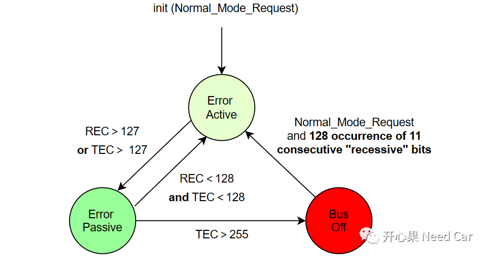

开心果 Need Car · 2023-03-01T11:25:00+08:00 · 微信原文
1、busoff恢复机制
11898-1规范中，规定：当节点busoff以后，至少要等待连续128个11 bit隐性位，如下所示：

假设，使用500Kbps的经典CAN帧，1 bit = 2µs，故障节点重新参与通信的最快时间 = 128 * 11 * 2 = 2816µs = 2.816ms。这与我们工程中常见的快/慢恢复需求时间有些不同，这又是为什么呢？
2、工程快/慢恢复时间要求
比如：工程中要求，节点busoff以后，快恢复时间10ms，慢恢复时间1000ms。第一小节中，计算busoff节点重新参与通信的最快时间= 2.816ms，也就是说，恰巧此时间范围内，同网段内的其他节点不需要使用总线。实际的工程中，该工况出现的可能性比较低，一个网段内，一般会有多个节点，构成的通信矩阵会比较复杂，所以，正常通信过程中，近3ms的时间没有节点使用总线的概率比较低。所以，每家OEM，会根据自家的EE架构，设计busoff的快/慢恢复时间，尽可能地使总线通信稳定。所以，当有节点发生busoff时，为了不干扰同网段内的其他节点通信，故障节点不应过快地参与通信。先让故障节点进行一个快恢复，这样，因为偶发干扰导致的节点故障可以快速恢复，重新参与通信。如果故障节点经过了几次快恢复，仍然没有恢复正常通信，为了尽可能地降低对同网段其他节点的通信干扰，可以让故障节点进入慢恢复，即：让故障节点不要过快地加入总线，降低其对总线的干扰。所以，这就是工程中提出快/慢恢复机制的原因。
节点busoff，是一种故障行为，在满足一定次数后，需要记录对应的DTC，以便于车辆问题排查和维修。工程实际中，很少一次busoff就上报Busoff DTC，一般来说，需要连续多次busoff（eg：10次），才进行Busoff DTC处理。
（二）busoff处理
Autosar中，CanSM_ControllerBusOff()接口由CanIf调用，告知CanSM对应节点Busoff产生，之后，进行busoff的恢复处理机制。对于恢复机制的处理，可能因Autosar软件供应商的不同，代码上会有所不同。比如：有些供应商，会通过配置选项（一般在CanSM_Cfg.h文件）添加busoff处理前/后callout，对应的宏如下所示：
如此配置以后，即可进行节点busoff前/后的自定义处理。BusOff Begin处理示意如下所示：
(*CanSM_CurrentChannelVarPtr).CanSM_TxOnlineDelayTime = 0;(*CanSM_BusOffBeginIndicationFctPtr)( CanSM_GetNetworkHandleOfChannelConfig( CanSM_CanNetworkIdx ), &( (*CanSM_CurrentChannelVarPtr ).CanSM_TxOnlineDelayTime ) );
既然有callout，程序员处理busoff就有了很大操作性。
往期精彩回顾
Autosar EcuM：APP由RUN到POST_RUN浅析